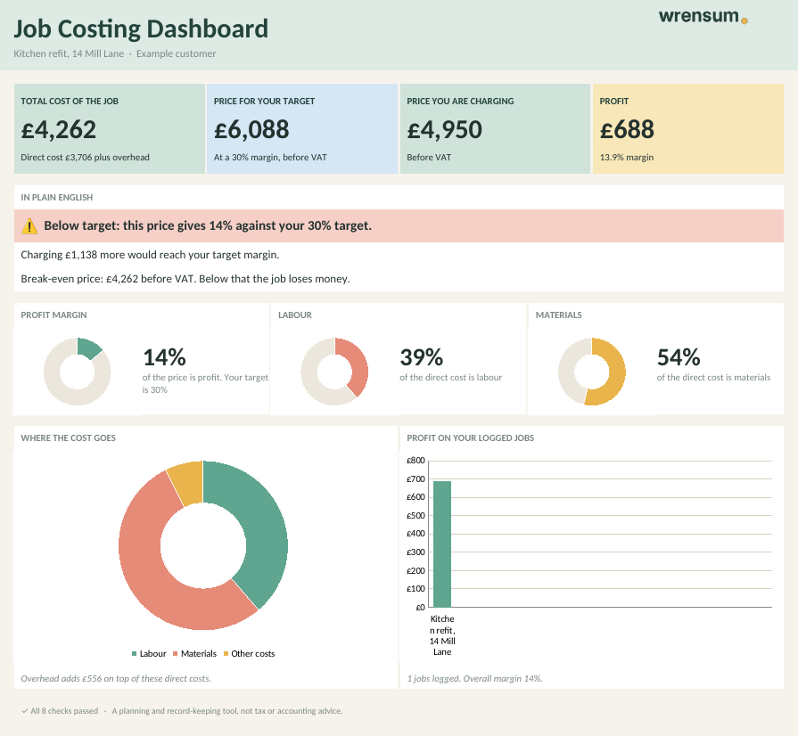

Job Costing Calculator
Work out what a job really costs you, what to charge for it, and whether it made money.
Buy for £8One-off payment. Excel file (.xlsx), delivered as a download.

What you get
- Labour, materials and other costs on one sheet
- Overhead added automatically at the percentage you set
- A suggested price based on your target profit margin
- Profit and margin on the price you are charging
- A jobs log to track profit across every job you finish
- A dashboard that says in plain English whether the price hits your target, and how much more would
- A sheet that checks the file for common slips, such as text typed in a number box
Who it is for
Trades, makers and service businesses that price work job by job.
Try the free calculator first
The free markup and margin calculator works out a price from one cost figure, your overhead and the margin you want.
How to use it
- Set your overhead percentage and target margin once.
- List the labour, materials and other costs for the job.
- Compare the suggested price with what you plan to charge.
Questions
- What is overhead?
- The running costs you carry on every job, such as a van, insurance, tools and phone. You set it as a percentage of direct cost.
- Can I cost several jobs?
- Yes. Copy the Job sheet for each new job and record the results in the jobs log.
- What do I need to open it?
- Microsoft Excel. The file has also been tested in LibreOffice Calc. It contains no macros.
- Are the figures in it real?
- No. Each file comes with example figures to show the format. You type over them.